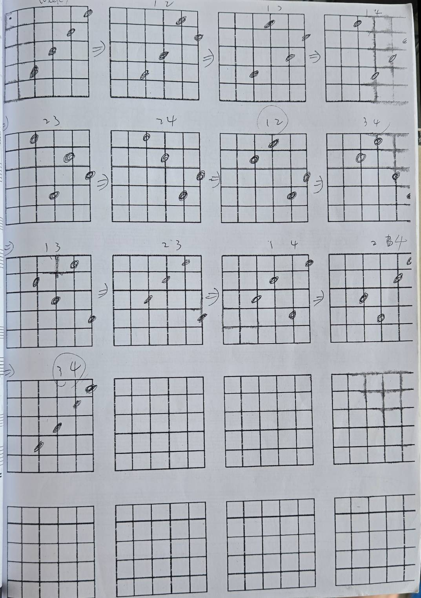

建立左右手協調度 · 機構式爬格與按壓技巧
分類項目：基本手指與 Picking
教學核心：練習原則：跟著節奏、不間斷、慢速增加
實作重點：蜘蛛走法、交錯爬格、依序練習、無名指訓練、平移練習、跨格練習
• 開啟節拍器進行練習。
• 每個音符落點必須精準對齊拍點。
• 避免「彈得快但節奏忽快忽慢」。
• 換弦與換手指時音訊不中斷。
• 避免按錯音時停頓，保持拍子的流暢度。
• 左手獨立性與右手的預先到位。
• 從極慢速（如 BPM 60）開始。
• 確定 100% 顆粒清晰、無雜音後，每次調升 3~5 BPM。
心法提醒：「慢即是快」！機能訓練的核心在於建立肌肉記憶，而不是比拼當下的速度。
右手配合：全程使用正反交錯撥弦（Alternate Picking：↓ ↑ ↓ ↑），不可連續同方向撥弦。
| 練習項目 | 練習方式說明 | 訓練目標 |
|---|---|---|
| 3. 依序練習 | 從 6 弦到 1 弦依序進行 1-2-3-4，抵達高音弦後逆向 4-3-2-1 返回低音弦。 | 建立基準節奏感知與跨弦撥弦動態。 |
| 4. 無名指訓練 | 專門針對弱勢手指的組合練習，如 2-3-4-3 或 1-3-4-3，強調無名指與小指的獨立發力。 | 消除無名指按弦時連帶牽動中指或小指的問題。 |
| 5. 平移練習 | 在單一弦上進行 1-2-3-4 ➔ 2-3-4-5 ➔ 3-4-5-6 向高把位平移，再反向推回。 | 訓練手臂與大拇指在琴頸後方平滑移位的能力。 |
| 6. 跨格練習 | 進行隔格擴張練習，如 1 - 3 - 4 - 5 或 1 - 2 - 4 - 5（跨越一個品格）。 | 擴展左手手指開展度，為日後音階與伸展和弦打底。 |
練習要領：練習時專注於按壓顆粒感與發力放鬆，避免過度僵硬。
指法組合與按壓位置細節 (Finger Mindset Diagram)

1. 開啟節拍器 BPM 60，進行 16 分音符（每拍 4 音）交錯撥弦。
2. 依序測試「依序爬格 ➔ 蜘蛛走法 ➔ 1-3-2-4 交錯 ➔ 跨格平移」。
3. 觀察手指抬起高度，儘量控制在距離指板 1 公分以內，減少多餘動作。
本週課後每日訓練菜單（15分鐘）：
1. 蜘蛛走法與依序爬格：BPM 60~80 暖身 5 分鐘。
2. 1-3-2-4 / 無名指強化組合：5 分鐘（注意音色顆粒均勻）。
3. 單弦平移與跨格擴張：5 分鐘（注意手腕放鬆，不可過度僵硬）。